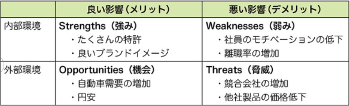
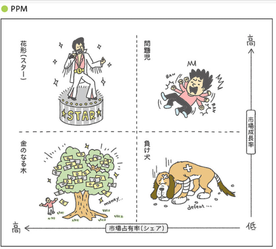

ITパス暗記ノート
1章
- CSR
(Corporate Social Responsibility)
- 企業の社会的責任
- グリーンIT
- ITを使った環境保護
- SDGs
- 持続可能な世界を実現するための17の国際目標
- OJT
（On-the-Job Training）
- 業務の実践を通じた教育訓練
- Off-JT
（Off-the-Job Training）
- 仕事を離れて行われる教育訓練（研修等）
- HRM
(Human Resource Management)
- 人的資源管理
- HRテック
- HRMのうち、AIやIoTといったITを活用する手法
- CEO
（Chief Executive Officer）
- 経営の最高責任者
- CIO
（Chief Information Officer）
- 情報システムを統括する最高責任者
- CTO
（Chief Technology Officer）
- 技術経営の最高責任者
- ABC分析
- データをパレート図で表し、重要度で3つのグループにランク分けする
- ROE
(Return On Equity）
- 自己資本利益率＝当期純利益/自己資本×100
自己資本に対して、どれだけの利益を出したかを表す指標
大きいほど得
2章
3章
- SWOT分析
- 自社を取り巻く経営環境を把握できる
内部環境とは、自社の努力で変えられる項目
外部環境とは、自社ではコントロールできない項目

- PPM
(Product Portfolio Manegement)
- 資源を投下すべき製品、撤退すべき製品を分析
花形と問題児には投資を続け、金のなる木と負け犬には追加投資は不要

- M&A
(Mergers and Acquisitions)
- 会社を買収・合併すること
- IPO
（Initial Public Offering）
- 新規公開株式。自社の株式を株式市場に新規に公開すること
- マーケティングミックスの4P
- 目標達成のために自社がコントロール可能な４つの手段
「Product」「Price」「Place」「Promotion」
- RFM分析
- Recency（最終購入日）・Frequency（購入頻度）・Monetary（購入金額）の3指標で顧客を評価し、優良顧客や休眠顧客などに分類してマーケティング施策に活かす手法
- UX
(User Experience)
- 商品やサービスなどを実際に利用することによって得られる体験
- BSC
（Balanced Scorecard）
- 「財務」「顧客」「業務プロセス」「学習と成長」の4つの視点から業績評価を行う手法
- CSF
(Critical Success Factor)
- 重要成功要因。戦略目標を達成するために必要となる具体的な要因
- KPI
（Key Performance Indicator）
- 重要業績評価指標。目標達成に向けたプロセスの達成度を定量的に評価する指標
- ERP
(Enterprise Resource Planning)
- 企業の持つ資源＝「ヒト」「モノ」「カネ」「情報」を一か所に集めて管理し、有効活用するという考え方
- SCM
（Supply Chain Management）
- 「供給連鎖管理」、原材料調達から消費者への提供までの一連の流れを企業間で最適化する。需要と供給のバランスを整え、必要な商品を必要な量・タイミングで届ける体制を構築
- SFA
(Sales Force Automation)
- 営業支援システム。営業部門のメンバー行動、商談の進捗状況とその結果を見える化し、営業の生産性向上や業務改善を実現するためのツール
- CRM
(Customer Relationship Management)
- 顧客情報を一元管理し、営業・マーケティング・カスタマーサポートの成果を高めるための仕組み
4章
- API
（Application Programming Interface）
- ソフトウェア同士が情報や機能をやり取りするための“窓口”や“接点”を定めた仕組み
- オープンAPI
- 外部に公開されたAPI
- APIエコノミー
- 他社のサービスを利用し、自社だけでは実現できない価値を作ること
- PoC
(Proof of Concept)
- 概念実証。新しいアイデアが技術的に実現可能かの検証
- PoV
(Proof of Value)
- 価値実証。アイデアがビジネスにとって価値があるかを検証
- RFID
(Radio Frequency Identification)
- 電波を用いて触れずに情報をやり取りする技術
定期券、電子マネー、社員証、学生証など
- ICタグ
- ICチップ（集積回路）とアンテナで構成される装置
- NFC
（Near Field Communication）
- 近距離無線通信（数cm）。RFIDの規格の一つ。交通系ICカードで使用。
NFCとQRコードの違いは、NFCはメモリに何度も読み書きできること。
- GPS
（Global Positioning System）
- 3つ以上の人工衛星の電波を使って位置情報を特定するシステム
- 生成AI
- テキスト、音声、静止画、動画などのオリジナルコンテンツを自動的に生成するAI
ディープラーニングで学習
- CAD
(Computer Aided Design)
- コンピュータを使って設計図を描くシステム
- CAM
(Computer Aided Manufacturing)
- 設計図のデータを元にして、工作機械を操作するためのプログラムを作成するシステム
- JIT生産方式
(Just in time)
- 必要な物を、必要なときに、必要な量だけ生産する方式
トヨタの方式。別名うかんばん方式
- EC
（Electronic Commerce)
- 電子商取引
- CGM
（Consumer Generated Media)
- 一般消費者（個人）がインターネットを通じて、自らの情報を不特定多数に向けて発信するメディアのこと。ブログや口コミサイト、SNSなど
- IoT
(Internet of Things)
- 自動車や家電などの「モノ」が直接インターネットにつながって、お互いに情報をやりとりすること
- IoTゲートウェイ
- IoTデバイスとIoTサーバ間の通信を中継することでネットワークの負荷を軽減する装置
- Society 5.0
- 「仮想空間」と「現実空間」を融合させたシステム。代表例：自動運転
5章
- EA
(Enterprise Architecture)
- 企業や政府など、大きな組織の情報システムを最適化するための手法
SoE
(Systems of Engagement)
ユーザーとのつながりを強化するシステム <=>SoR(Systems of Record)
DFD
(Data Flow Diagram)
データフロー図とは、業務プロセスの「データの流れ」を表す図である
BPR
（Business Process Reengineering）
業務プロセスを抜本的に再設計する手法である
BPM
（Business Process Management）
業務プロセスを継続的に改善する手法である
RPA
(Robotic Process Automation)
定型的な事務作業を自動化する（ソフトウェアロボット）
IaaS
（Infrastructure as a Service）
クラウド上で サーバー・ストレージ・ネットワークなどの基盤を提供するサービス形態で、企業が物理機器を持たずに IT インフラを利用できる仕組み。
PaaS
（Platform as a Service）
プラットフォームを提供するサービスである(Google App Engine.OSなど)
SaaS
（Software as a Service）
ソフトウェアを提供するサービスである(Gmail,Zoom)
Daas
(Desktop as a Service)
クラウド上に仮想デスクトップを構築し、PC・タブレットなどからネット経由で利用する仕組み。
BI
(Business Intelligence)
企業内のデータを収集・分析・可視化し、より良い意思決定を支援する仕組みや手法の総称
デジタルトランスフォーメーション(DX)
デジタル技術を使った変革
ソフトウェアライフサイクルプロセス（SLCP）
ソフトウェアの企画、要件定義、開発、運用、保守までの一連の活動であり、それらの活動内容を定義した国際規格
企画 → 要件定義 → 開発 → 運用 → 保守
ROI(投資利益率)
(Return On Investment)
ROI ＝ 利益 ÷ 投資額
RFI(情報提供依頼書)
(Request For Information)
ベンダーに対して実績や技術、経験、最新の技術動向などの情報を送るよう依頼する文書
ベンダーの一次審査と情報集めが目的
RFP(提案依頼書)
(Request For Proposal)
ベンダーに対して具体的なシステムの提案を依頼する文書
NDA
(Non-Disclosure Agreement)
機密保持契約
6章
７章
WBS
（Work Breakdown Structure）
プロジェクトの作業を階層的に要素分解した図
8章
ITIL
ITサービスマネジメントのベストプラクティス集
PDCAサイクル
・「計画」に近い用語が入っている選択肢は、Plan
・「実行」に近い用語が入っている選択肢は、Do
・「評価」に近い用語が入っている選択肢は、Check
・「改善」に近い用語が入っている選択肢は、Act
SLM
(Service Level Management)
サービスレベル管理とは、サービスの提供者と利用者が合意した「サービスレベル」を維持・改善するための活動。
SLMでは主にPDCAの手法を使ってサービスレベルを維持・改善する
SLA
(Service Level Agreement)
サービスレベルの合意書。SLAの目的は、サービスの範囲と品質を明確にすることである
BCM
（Business Continuity Management）
災害が起きても事業を継続させるための経営手法
BCP
(Business Continuity Plan)
事業をいかに継続するかをまとめた計画
UPS
（無停電電源装置）
一時的（数分）に電力を供給するための装置
ITガバナンス
ITを活用して、企業のあるべき姿に導く仕組みを企業に組み込むこと
9章
HTML
Webページの論理構造や文字要素を記述するマークアップ言語。HTMLでは、タグの使い方決まっている
XML
利用者が自由にタグを定義できる
CSS
Webページのデザインやレイアウトを指定する言語
10章
ストライピング（RAID 0）
複数のハードディスクにデータを分散させて書き込む記憶方式である
ミラーリング（RAID 1）
複数のハードディスクに同じデータを書き込む記憶方式である
NAS
（Network Attached Storage）
LANに直接接続して使用するファイルサーバ専用機。複数のPCで共有できる
TCO
（Total Cost of Ownership)
初期コストと、運用コストの総額
MTBF
（Mean Time Between Failures）
平均故障間隔。システムが故障せずに正しく動いていた時間の平均値。システムの信頼性を表す指標の1つ
・MTBF ＝ 稼働時間の合計 ÷ 故障の回数
MTTR
（Mean Time To Repair)
平均修理時間。システムが稼働していなかった時間の平均値。システムの保守性を表す指標の1つ
・MTTR ＝ 故障時間の合計 ÷ 故障の回数